Project
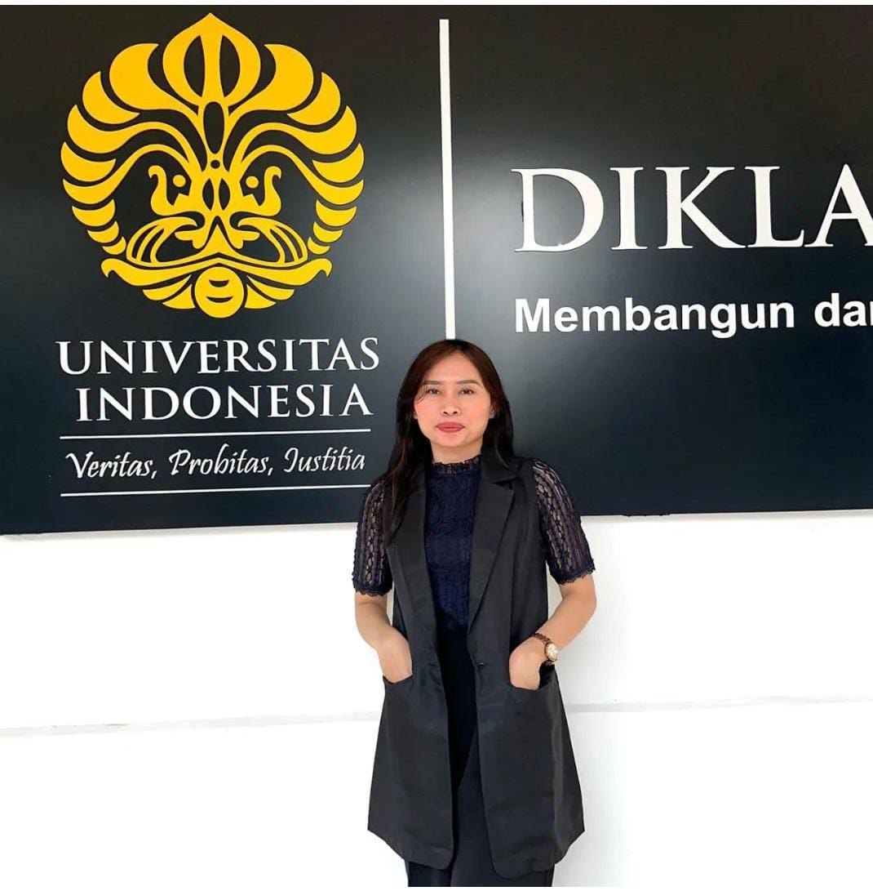
Brevet AB & E-SPT
Mengikuti program pelatihan perpajakan Brevet AB & E-SPT di Universitas Indonesia, Jakarta Pusat. Sebagai angkatan BrevetAB 112 yang menyelesaikannya selama 6 bulan, pada bulan Februari- Juni 2023.
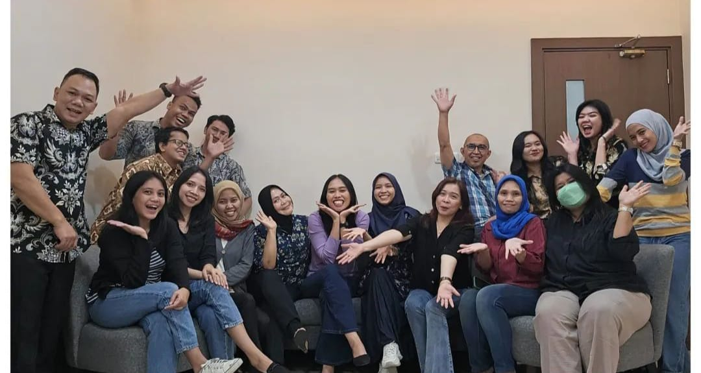
Staff Accounting
Bekerja sebagai staff Accounting di perusahaan konstruksi Oil & Gas di PT Duta Karsacipta Buana.
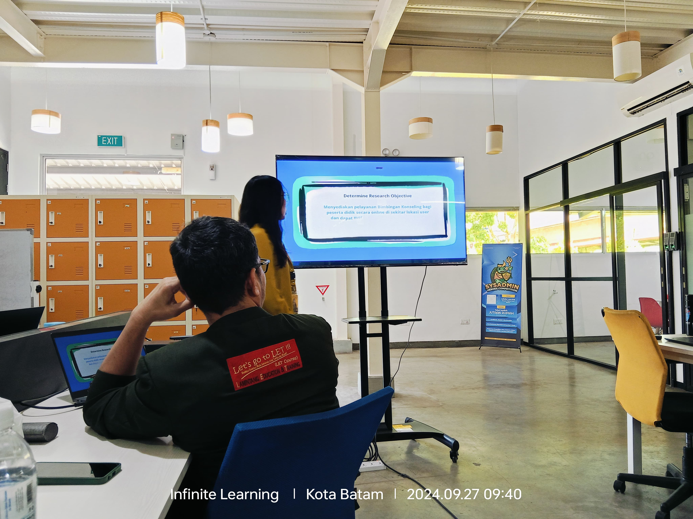
Web Development (Guru Digital)
Presentasi project kelompok dalam kegiatan FIT-STOP Determine Iteration pada program pelatihan Guru Digital yang dilaksanakan Dinas Pendidikan Kepulauan Riau bekerjasama dengan Infinite Learning.
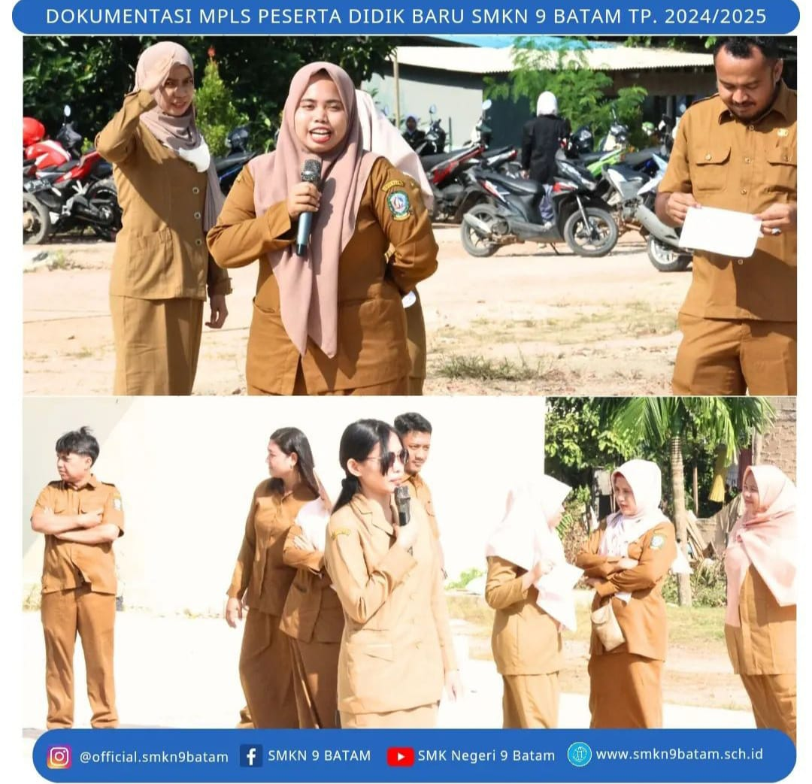
MPLS
Sebagai Kepala Program Keahlian Akuntansi, memberikan pengenalan jurusan akuntansi kepada siswa baru TP 2024/2025 pada kegiatan MPLS di SMK Negeri 9 Batam.
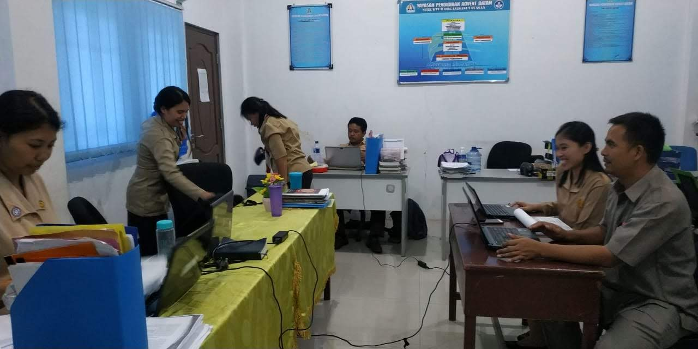
Ketua Akreditasi
Memberikan pemahaman kepada guru tentang rubrik penilaian akreditasi pada standart kurikulim K-13 di SMK Advent Batam.
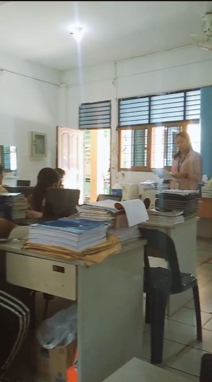
Sekretaris Dana BOS
Mempresentasikan laporan Dana BOS tentang pembiayaan pada Tahap II TP.2021/2022 dan penganggaran pada periode berikutnya kepada seluruh guru SMK advent Batam, pengurus yayasan YPAB dan ketua komite sekolah
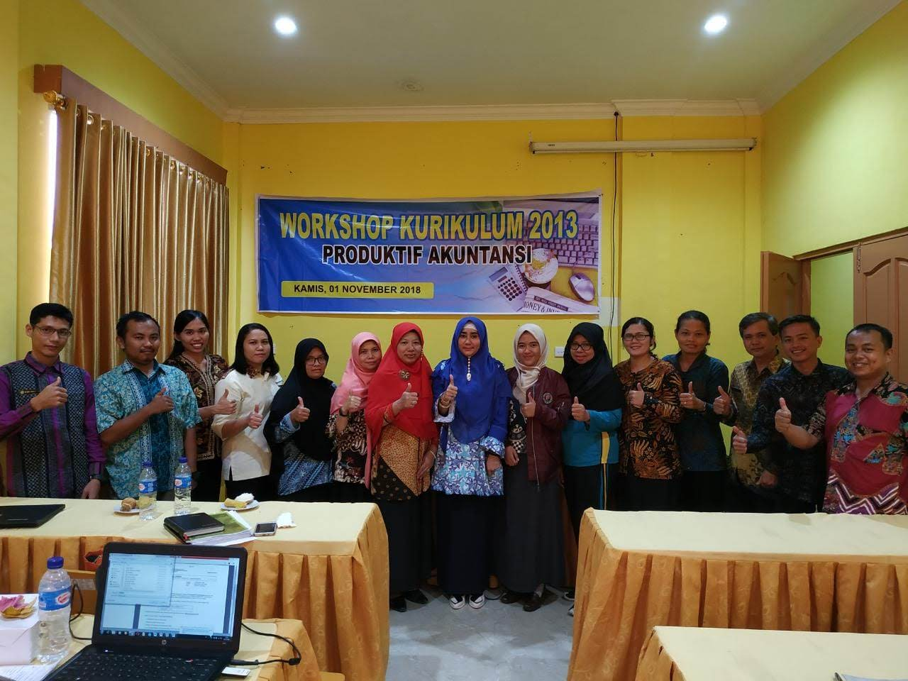
MGMP Akuntansi se Kota Batam
Mengikuti Workshop Kurikulum K13 yang dilaksanakan perkumpulan Musyawarah Guru Mata Pelajaran (MGMP) akuntansi yang dipimpin oleh Ibu Yuni Syahfitri selaku pengawas sekolah tingkat SMK
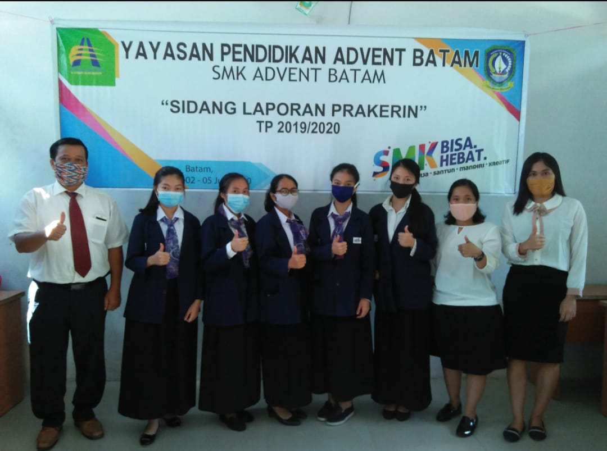
Penguji I
Sebagai penguji I dalam kegiatan sidang Laporan Prakerin di SMK Advent Batam.
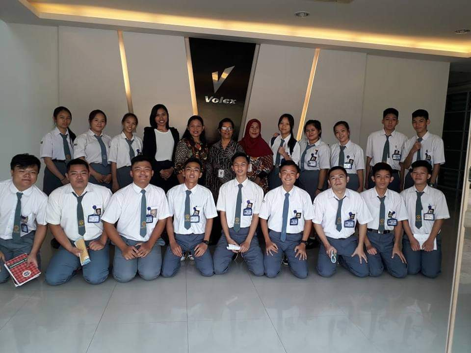
Kunjungan Industri
Membawa siswa kelas XI SMK Advent Batam kunjungan industri ke PT Volex Batam
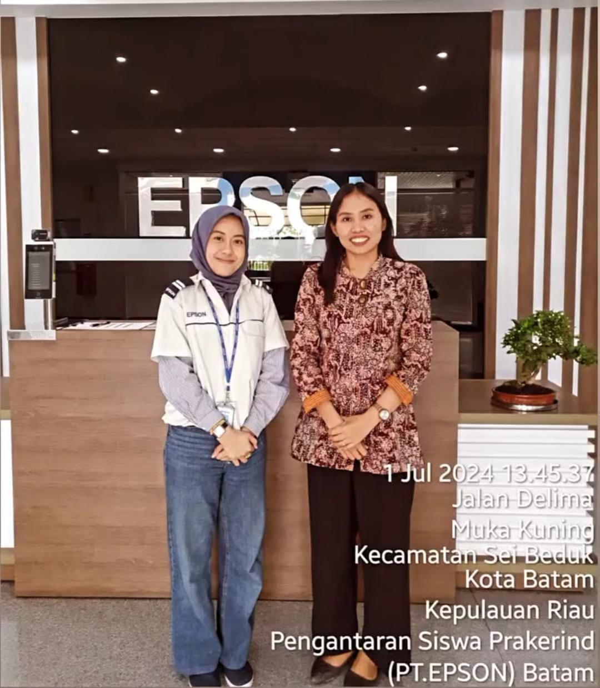
Prakerin
Pengantaran siswa SMK Negeri 9 Prakerin jurusan akuntansi ke perusahaan PT Epson Batam
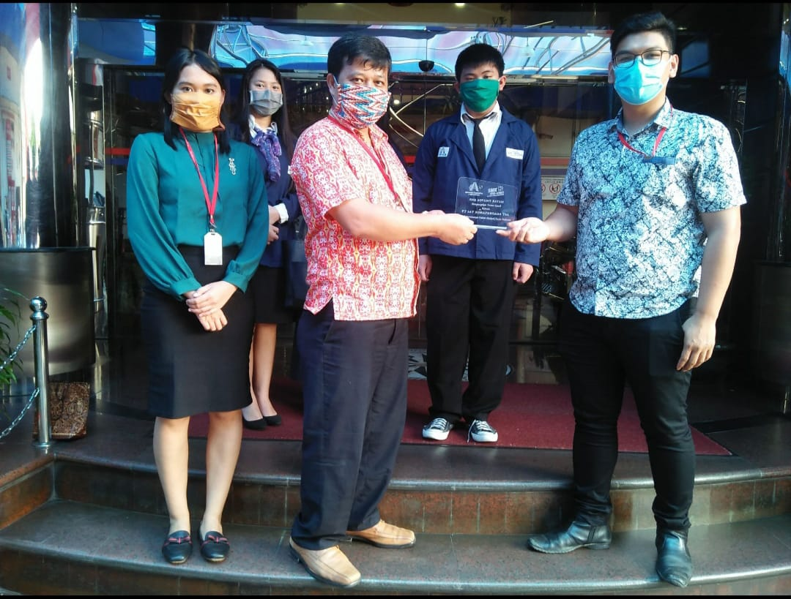
Prakerin
Penjemputan siswa Prakerin SMK Advent Batam bersama Kepala Sekolah dari PT Sat Nusapersada,Tbk
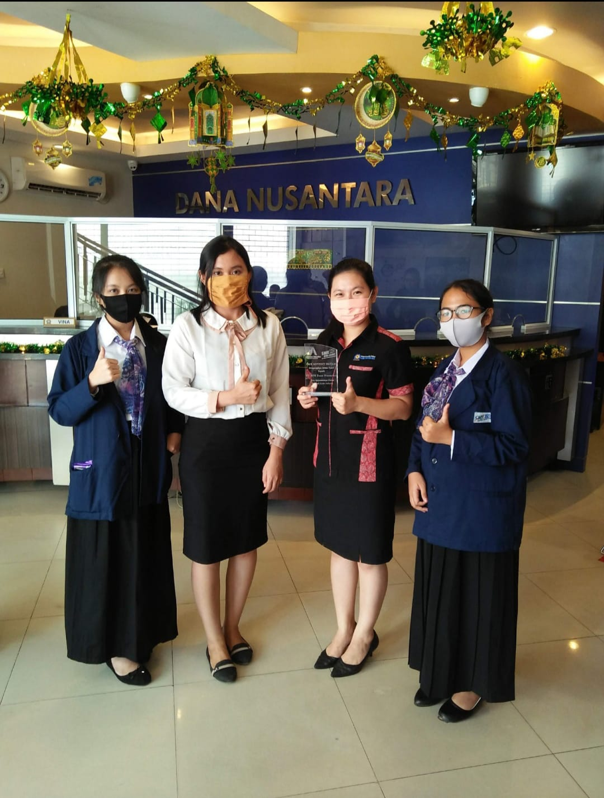
Prakerin
Penjemputan siswa Prakerin SMK Advent Batam dari BPR Dana Nusantara Nagoya, berfoto bersama Ibu Fransika selaku Personalia BPR Dana Nusantara
Hobby
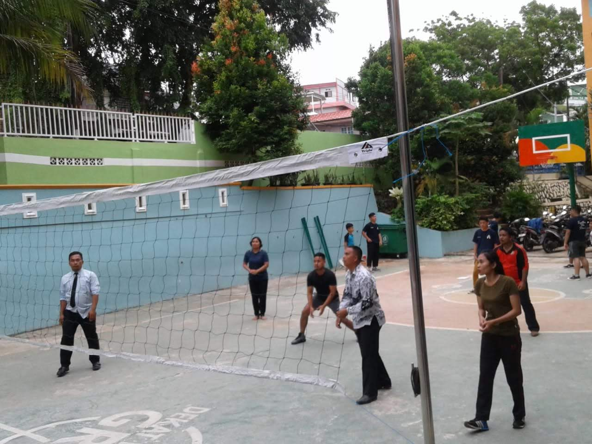
Volly
Pertandingan Volly guru di Yayasan Pendidikan Advent Batam dan mendapat juara I.
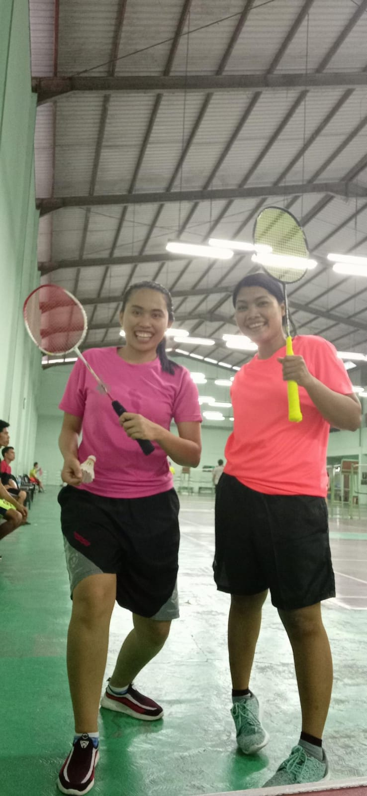
Badminton
Member guru Badminton SMK Advent Batam yang dilaksanakan setiap hari Rabu di Gor Batu Batam